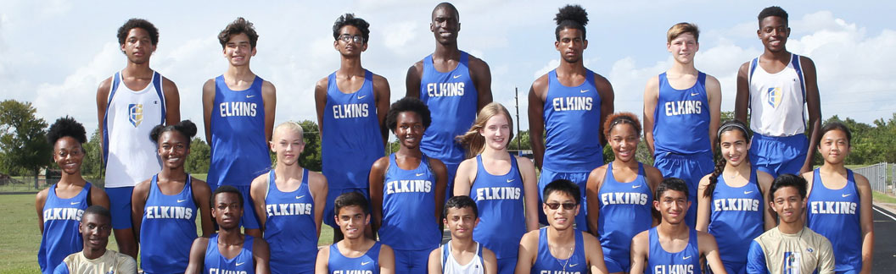
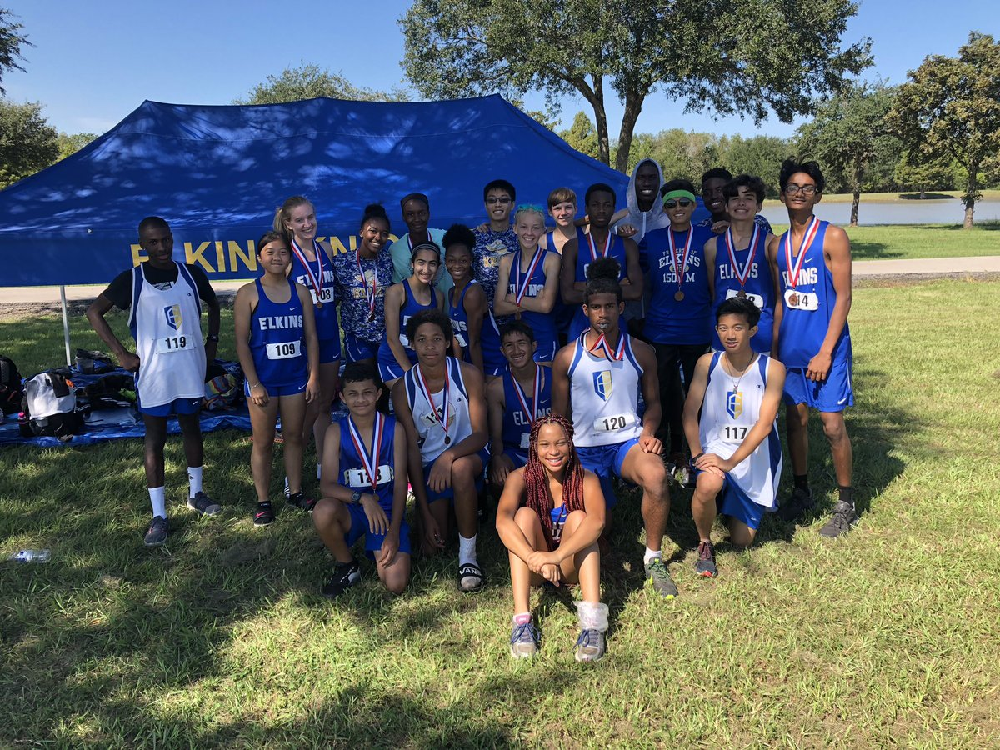
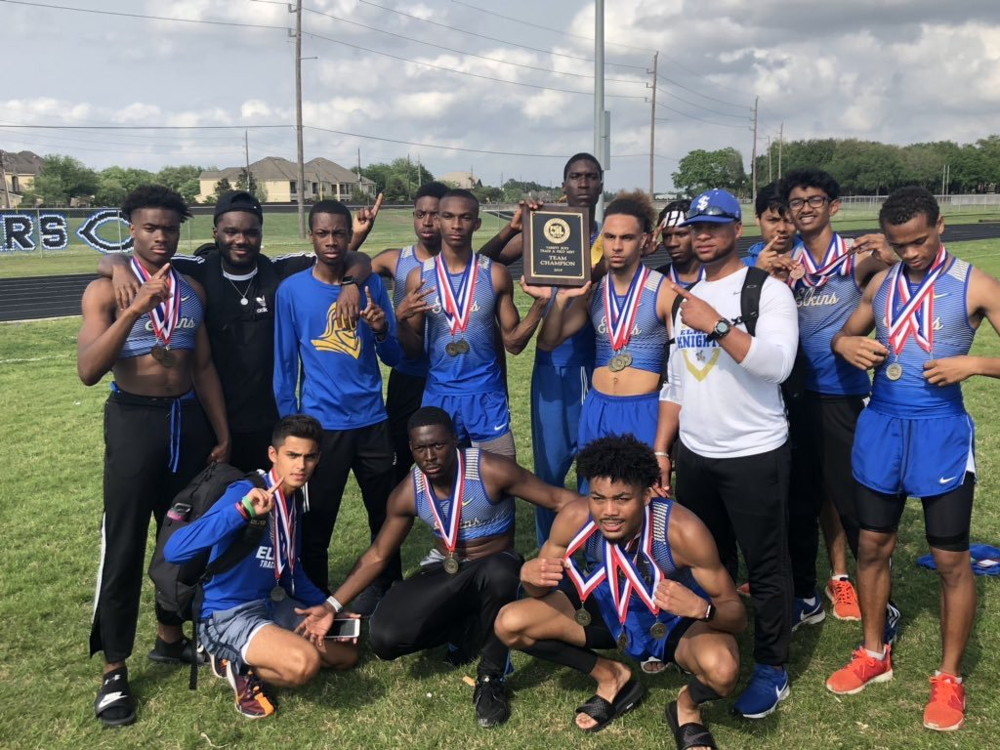
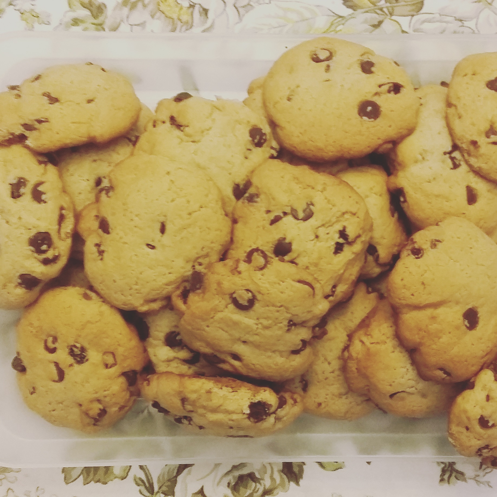

Interest
Electrical Enginering and Computer Science
Entrepreneurship
Bussiness
Accounting
Hobbies
Track
9th Grade - 2017/2018
I have been runing track for 4 years. During my 9th grade year, I was on the Freshman team. The events I ran were the 800m, 400m and 4x400m. At the District meet I placed 3rd in the 4x400m, 2nd in the 800m, and 5th in the individual 400m. I ended that year with a PR: 2:12s in the 800m and a PR: 55s in the 400m.
10th Grade - 2018/2019
10th-grade year was a break out year for me in track. During the fall I ran Cross Country which allowed me to prepare for the spring track season. Unlike track which for me had focused on speed up until this point, Cross Country was a test of will. Ten percent of Cross Country was how fast you were, 90 percent was how badly you wanted to win. At the district meet for Cross Country I came 36th overall and my PR was 18:08mins. My school came 4th overall.
When spring finally came around I had more stamina and could hold my speed over distance. That season instead of running the 400m or 4x400m I ran the 800m and the 1600m. My school already had solid track stars that could run 48s and 49s in the open 400 but up till then, their fastest current 800m runner was a 2:04. Half of the track season passed and I had not competed in one event. My coach wanted me to run at a JV meet before determining whether to put me on Varsity. The problem was that the JV track meets were getting canceled due to the rain so I had no oportunity to prove my speed Finally, my coach decided to let me run the 800m at a Varsity meet. Defying all expectations I was able to run a 2:06s. Throughout the season I ran 2:06 consistently and the one race I ran the 1600m it was a 5:01
Coming into the district meet I was ranked 9th in the district in the 800m and unranked in the 1600m. Sadly, only the top 4 runners for each distance advanced to Area. Come race day, I got out of the gates for the 800m finals and ran an opening 24s in the 200m. I kept my lead for the first 600m but soon after the other runners caught up and one by one they sprinted past. By now my lungs were burned and my legs felt heavy. Ahead of me I saw 3 racers, I was in fourth place but others were closing in fast. I don't know where the strength came to continue but I pushed through it and like no one expected finished 4th. In one race, I shed 5s off my PR and ran a 2:01s. Inspite of how tired my legs felt after the race, I was still signed up to run the 1600m. Later that day I lined up for the start of the 1600m and at the sound of the gun I took off. No one could have predicted the outcome of this race. Just imagine three Elkins knights taking 2nd, 3rd, and 4th. I came in 4th and my broke my previous PR by 8s, running a 4:50s. In one meet I advanced to Area in both the 800m and 1600m.
Cooking
 Another one of my passions is cooking. I don't cook as often as I would like too, but I do enjoy watching food reviews and cooking tutorials on youtube: Binging with Babish and Strictly Dumpling just to name two. My sister is the baker of the house and any time I get the opportunity we make delicious pastries. The most common dish I cook is spaghetti. Others may think this is a simple dish, but they haven't tested out secret recipe. When my sister and I were younger it would take us almost 2 hours o make one pot of spaghetti but nowadays we can prepare it in just over one hour. My favorite cuisine is Chinese food, to me, it is both healthy and delicious.